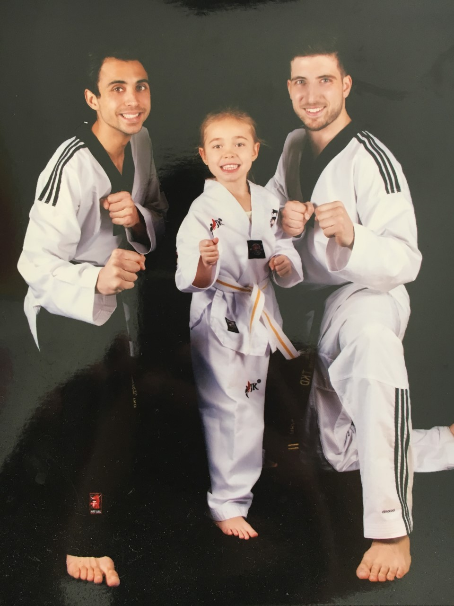
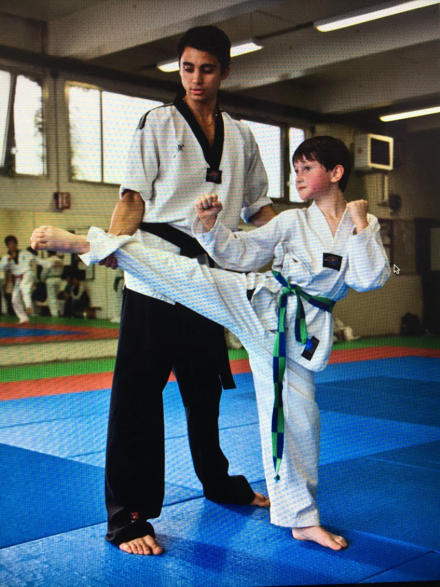
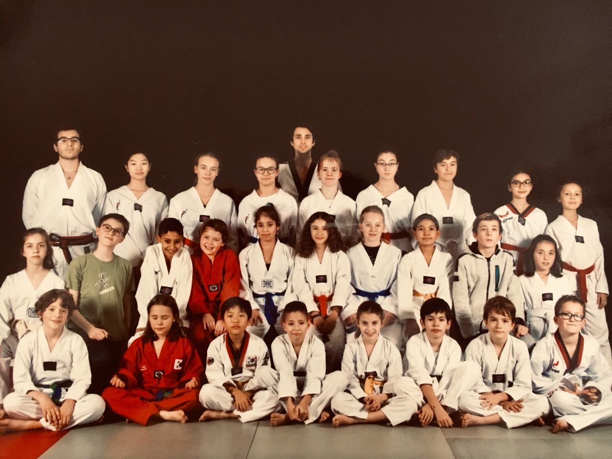

Horaire et Differents Cours
La section Baby Ninjas s'adresse aux enfants âgés de 3 à 5 ans. Les cours sont basés sur un ensemble d'activités ludiques visant à améliorer la motricité, la souplesse, la coordination et la socialisation de l'enfant. Mélange entre Baby Gym et Taekwondo, cette activité favorise l'apprentisage des valeurs et la découverte des émotions, mais reste toutefois dans un état d'esprit de jeu et de détente.
Lundi de 17h00 à 18h00 ou mercredi de 16h30 à 17h30

La section Petits Ninjas Taekwondo s'adresse aux enfants âgés de 6 à 8 ans. A cet âge là, tout est à découvrir, le corps, les règles, la technique, la relation aux autres... Nos professeurs s’engagent à les guider dans ces découvertes. L’apprentissage, se faisant de manière ludique et cadré, est basé sur la coordination, la dextérité, l’équilibre, la souplesse et la sécurité. C'est déjà une initiation à la technique et aux premiers principes tactiques.
Les enfants effectuent des frappes de coups de pieds spectaculaires sur des cibles adaptées (les raquettes) et font leurs premiers combats assaults (trois techniques de coups de pied chacun leur tour sans se toucher). Suite à l’évolution technique de chacun, les élèves sont amenés à passer leur ceinture lors des passages de grade organisés par le club chaque année.
Lundi de 18h00 à 19h00, mercredi de 17h30 à 18h30 ou samedi de 14h à 15h

La section Grands Ninjas Taekwondo s'adresse aux enfants âgés de 9 à 15 ans. Faire du sport, de l’activité physique, est la meilleure activité pour les adolescents qui sont à un âge de développement physique et de recherche de confiance en soi. Le Taekwondo constitue à la fois un sport et une activité ludique remarquable, qui apportent équilibre, sérénité, respect et déchargent du stress et du trop plein d’énergie.
Le TaeKwondo permet aux adolescents d’approfondir cet Art Martial à travers ses différentes facettes : développer les capacités physiques (force, vitesse, souplesse et coordination), d’éveiller le potentiel , de renforcer la volonté et de canaliser son énergie
Le club propose deux cours par semaine dans le but d’apprendre de manière approfondie tout les aspects de la discipline à nos élèves (cours techniques, démonstration, stratégie/combat et coups de pied spectaculaires). Le développement de la condition physique, de la souplesse et un travail de musculation spécifique sont intégrés à chaque entraînement.
Mercredi de 18h30 à 19h30 et samedi de 15h à 16h
